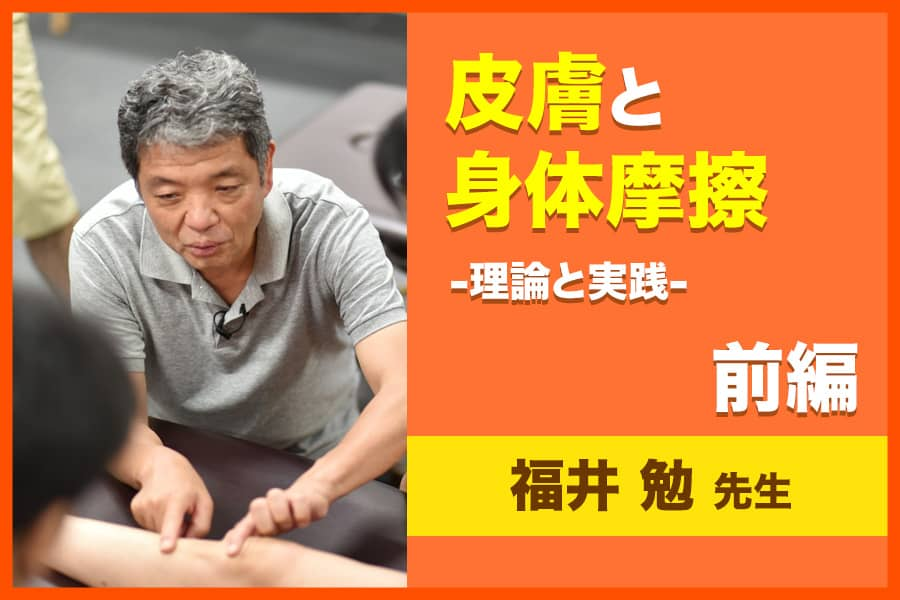
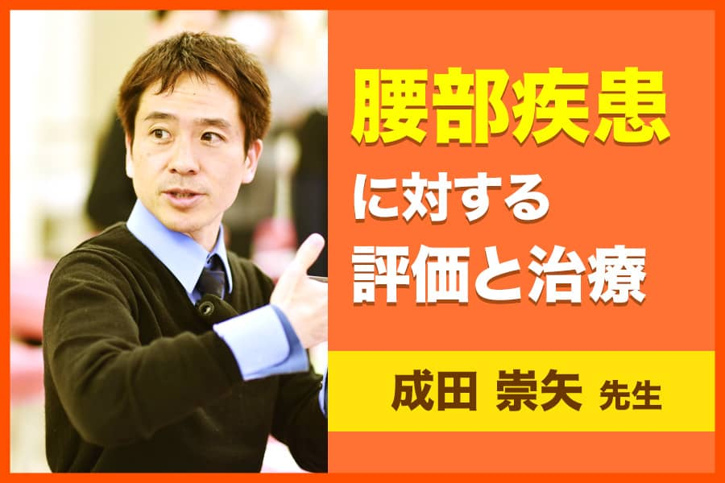

リハデミー内容を一部ご紹介！
ラインナップ
\ 動画500時間以上！
\トピックス700記事以上！論文毎日更新！/
-
脳を学ぶ-構造と機能を一から学ぶ-
脳は様々な場所（領域）に分かれ、それぞれ役割をもっています。またその場所同士がつながることで…
講師：森岡周先生
-
重度例に対する物理療法などの工夫について
脳卒中後の麻痺手の機能と生活における使用行動を改善するアプローチにConstraint-induced…
講師：竹林崇先生
-
中枢神経系疾患に対する上肢機能アプローチ
脳卒中対象者の感覚‐知覚機能の向上において、私はいくつかの条件を提案しています…
講師：山本伸一先生
-
基本的な脳機能解剖学と脳画像
セラピストは現象をみていく職業だから、画像を見る必要はない、という声を聞きます。しかし、現象の受け止め方や…
講師：吉尾雅春先生
-
脳卒中後遺症者へのニューロリハビリテーション
～急性期から回復期の麻痺改善を目指す徒手的介入～
昨今、診療報酬改定の影響もあって日常生活動作の自立だけが追求され、非麻痺側への寝返りや非麻…
講師：伊藤克浩先生
-
肩関節障害の評価と治療-前編-
肩の運動は複数の関節が協調して働くことによって遂行されます。そのため肩関節には、たとえ一部の…
講師：千葉慎一先生
-

皮膚と身体摩擦について -理論と実践- 前編
皮膚には精巧な機械受容器が備わっているだけではなく、システムとして機能しているとしか考え難い…
講師：福井勉先生
-
肩関節疾患に対する理学療法-機能障害の評価と治療-前編
「肩を診るのは難しい」、という声をよく聞きます。これは、肩関節疾患には腱板断裂、肩関節周囲…
講師：村木孝行先生
-
トップランナーが語る！基礎バイオメカニクス-基本動作を力学的に徹底理解-第1回
基礎的なバイオメカニクスの説明だけでなく、基本動作を力学的に理解することを目的としています…
講師：山本澄子先生,江原義弘先生
-
財前知典先生が伝える運動連鎖-上肢-体幹・下肢-体幹の治療アプローチ
理学療法士に関わらず、医師以外の治療家は動作を改善させることによって患者さんのニーズに応える…
講師：財前知典先生
-
脳卒中症例を通してエビデンスの活用を考える
-装具療法のエッセンスと高次脳機能障害へのアプローチについて-
脳卒中リハビリテーションにおいて、医療現場での診療報酬はどんどん下げられ、良い技術を届けられ…
講師：藤本修平先生
-
スクリーニングの基本/腰痛に対する理学療法
訪問、スポーツ、整形外科現場では、急変時の対応だけでなく利用者の様々な訴えに対して的確に判断…
講師：一色史章先生
-
瓜谷大輔先生から学ぶ！下肢の神経学的スクリーニングとモビライゼーション
下肢に対して神経学的に評価・治療を学んでいただけます。
講師：瓜谷大輔先生
-
バランス障害の評価と治療
バランスの捉え方・姿勢調節に関する神経機構などのバランスに関する基礎事項、およびバランス能力…
講師：望月久先生
-
臨床力には研究能力が必須！ 臨床の疑問から研究デザインと論理思考を身につける
保険制度を考えた時に、エビデンスをもとに臨床実践するEvidence-base practiceが証拠となるから…
講師：竹林崇先生,藤本修平先生
-
基本動作のバイオメカニクス〜基本戦略編〜
基本動作のバイオメカニクス〜基本戦略編〜では、患者の日常生活活動を制限する要因を動作能力と…
講師：石井慎一先生
-
脳血管障害片麻痺者の筋緊張異常に対する理学療法
脳血管障害片麻痺患者の筋緊張検査はどのように評価しているでしょうか。筋緊張検査
で判定できる結果は…
講師：鈴木俊明先生
-
体表解剖と触診の臨床応用 －絞扼性神経障害の評価・アプローチ－
末梢神経は全身を走行し、体表や体内の組織に分布します。この中枢から末梢側へ至るまでに、靱帯…
講師：上田泰久先生
-

腰部疾患に対する理学療法〜評価とアプローチ〜
本セミナーでは、腰椎に良く認める病態、機能解剖を理解した後、病態を判別する機能評価を行い…
講師：成田崇矢先生
-
頸部関節疾患に対するアプローチ
頭蓋下顎関節について、頭頚部の運動(頚部パターン)、頚椎の治療の実例などを、 市川式に基づき解説…
講師：市川繁之先生
<
>